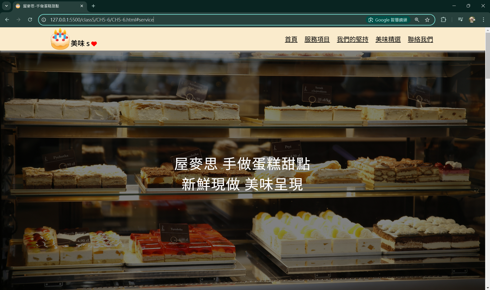
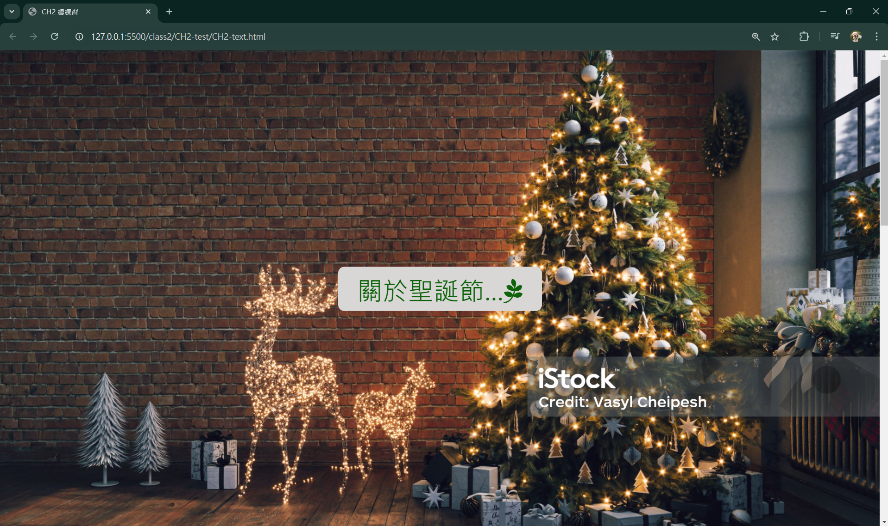
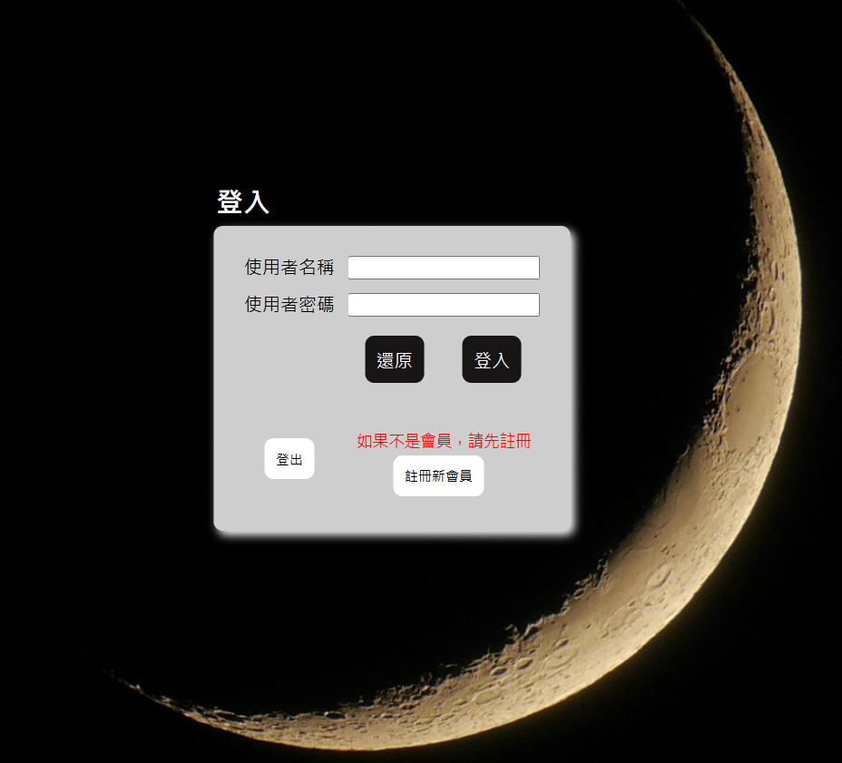
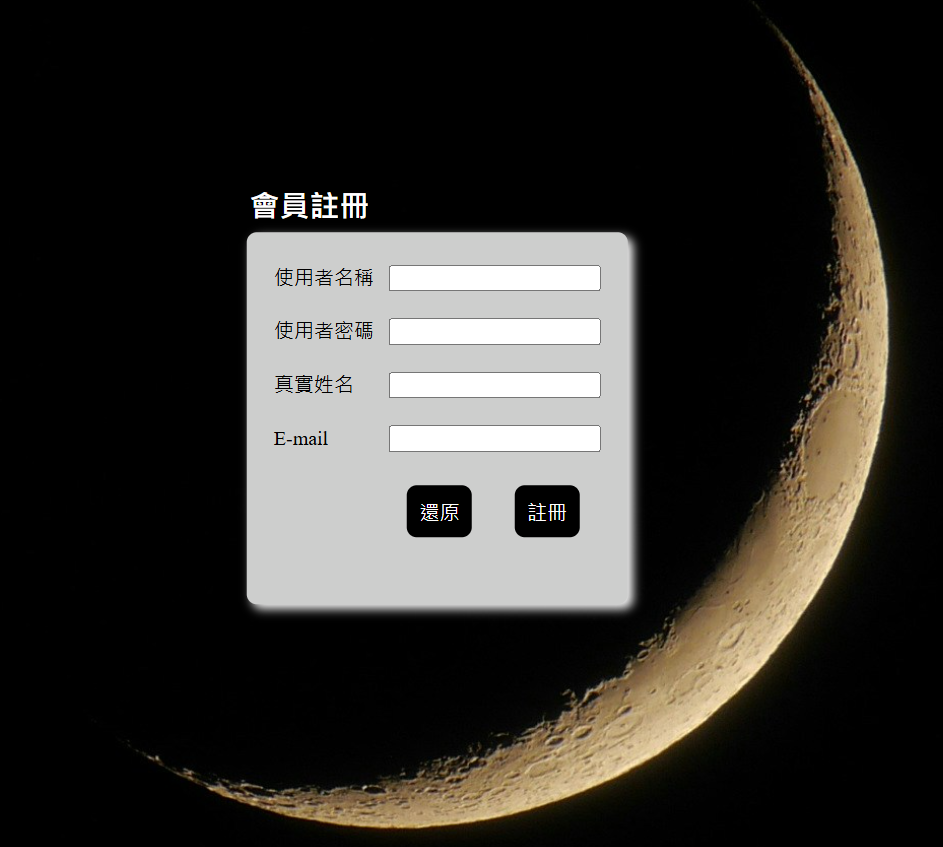
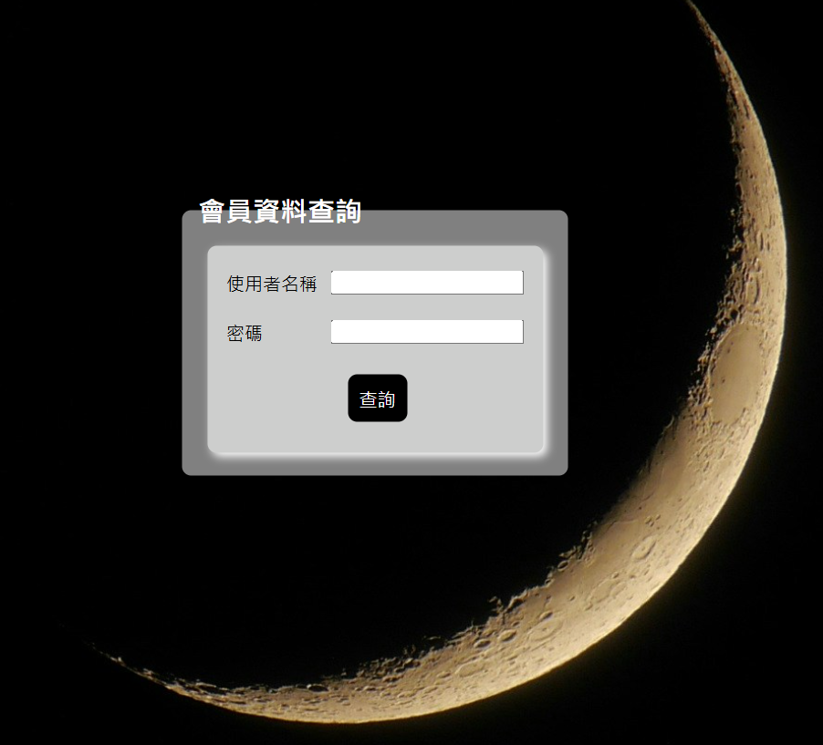

關於我
介紹
這個網站主要目的是把在這些日子裡上課所做的實作聚集起來，方便自己整理，也可以讓觀看的人比較清楚。
由於GitHub Page的網站架設主要是以靜態網站為主，所以關於後端Spring的部分會以影片的方式來呈現。
本網站的內容皆為自己所做的實作作品，形象網站有些圖片為網路上查找，如果有涉及版權問題還請告知會立即做調整。
也請勿盜用本網站的作品，謝謝。
由於GitHub Page的網站架設主要是以靜態網站為主，所以關於後端Spring的部分會以影片的方式來呈現。
本網站的內容皆為自己所做的實作作品，形象網站有些圖片為網路上查找，如果有涉及版權問題還請告知會立即做調整。
也請勿盜用本網站的作品，謝謝。
小小心得
我是生醫畢業，不是程式相關領域的學生，也可以說我是一個程式小白。
從Java基礎語言開始學習，更深入往Java Spring框架、Spring Boot來學習，也搭配資料庫(MSSQL)來建構系統， 後來又自學了前端Html、css及JavaScript等等技術。
當然這一路上遇到很多難題，甚至覺得老師不是用中文上課嗎? 一個字一個字分開聽，我知道是什麼意思， 但整句合起來怎麼聽不懂了呢? 別人3小時可以上完的課，我可能需要半天，甚至到一天才可以上完。 播放影片、影片暫停、重播影片、自己找資料、自己解bug、自己實作，每次大概都是一樣的路徑不停循環。
雖然這一路上並不簡單，但當自己做出一點點成果的時候，心中就會有股莫名的成就感，而這些成就感正式支持著我繼續往前面邁進的動力。
從Java基礎語言開始學習，更深入往Java Spring框架、Spring Boot來學習，也搭配資料庫(MSSQL)來建構系統， 後來又自學了前端Html、css及JavaScript等等技術。
當然這一路上遇到很多難題，甚至覺得老師不是用中文上課嗎? 一個字一個字分開聽，我知道是什麼意思， 但整句合起來怎麼聽不懂了呢? 別人3小時可以上完的課，我可能需要半天，甚至到一天才可以上完。 播放影片、影片暫停、重播影片、自己找資料、自己解bug、自己實作，每次大概都是一樣的路徑不停循環。
雖然這一路上並不簡單，但當自己做出一點點成果的時候，心中就會有股莫名的成就感，而這些成就感正式支持著我繼續往前面邁進的動力。
HTML網站設計

屋麥思-手做甜點蛋糕
一頁式RWD響應式形象設計網站，搭配導覽列，設計手做甜點蛋糕店家形象網站。

聖誕節介紹網站
利用網路上已有的聖誕節資訊，製作成不同視覺效果的資訊網站。
吉沐家 寵物美容
製作店家形象網站。
Spring框架設計

會員登入作業
將前端頁面(Html)得到的資料轉到後端資料庫進行驗證，
並將訊息狀態帶到樣板引擎產生的頁面。

會員註冊作業
提供方法 調用頁面 進行會員註冊作業， 表單資訊對應到注入的資料
會自動封存資訊。

會員查詢及會員更新
資料查詢使用thymeleaf做條件式的結果渲染以及資料更新。